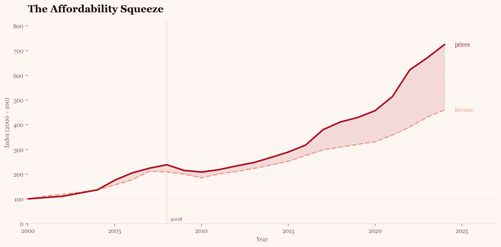
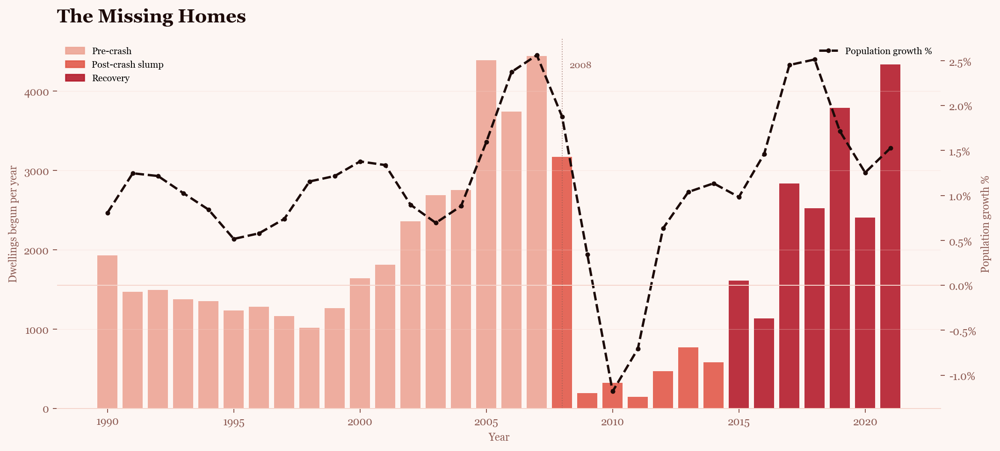
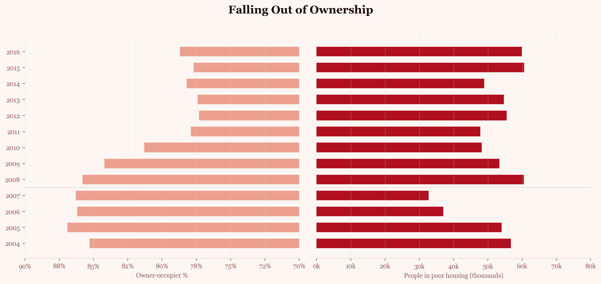
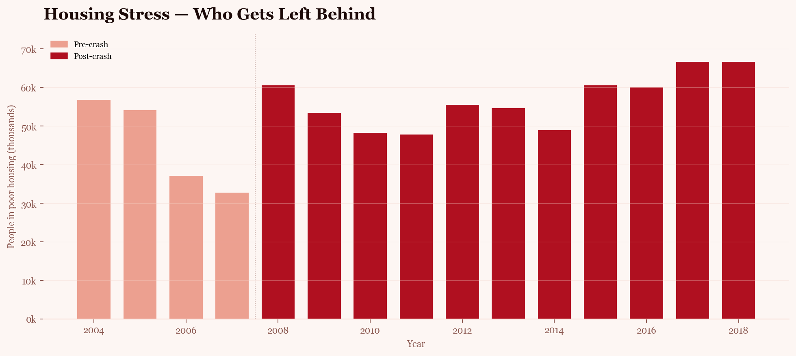

In Iceland, housing is not just an economic topic. It is personal. As Icelanders, we have felt the pressure of a housing market where prices rise faster than incomes, ownership feels harder to reach, and younger people increasingly wonder whether they will ever get the same housing opportunities as previous generations.
This data story looks at how Iceland’s housing market became squeezed from several directions: prices moved away from incomes, construction collapsed after the financial crisis, housing stress remained high, and new pressures such as tourism added further competition for space.
The clearest sign of the housing squeeze is the widening gap between house prices and income. Since 2000, Icelandic house prices have increased much faster than average income. This means that even when people earn more than before, housing has become harder to afford.
For young Icelanders especially, this gap is not abstract. It shapes where people can live, whether they can buy, and how long they remain dependent on renting, family support, or shared housing.

The affordability problem is not only about prices. It is also about supply. After the 2008 financial crisis, housing construction in Iceland fell sharply and stayed low for several years. But people still needed homes, and population growth continued.
This created a long-term shortage. When fewer homes are built while more people need somewhere to live, pressure builds across the entire housing market.

As homes become more expensive and supply becomes tighter, ownership becomes harder to reach. In Iceland, this matters because homeownership has traditionally been closely connected to security, independence, and long-term stability.
The data suggests that this pathway has become less accessible. At the same time as ownership declines, poor housing conditions remain high, showing that the pressure is not only financial but also social.

Housing stress is where the affordability crisis becomes visible in everyday life. It is not only about whether people can buy a home. It is also about whether people can access decent, secure, and suitable housing at all.
After the financial crisis, the number of people in poor housing increased and stayed high. This suggests that the housing squeeze created lasting consequences rather than a short-term shock.

The housing squeeze is not felt equally. Younger people are often at the point in life where they are trying to move out, rent independently, or buy their first home. But if incomes grow slower than house prices, the first step into the market becomes much harder.
This is why the affordability crisis feels especially personal to us. For our generation, the question is not only whether housing is expensive. It is whether the traditional path into ownership is still realistic.
Iceland’s housing market is also shaped by tourism. In popular areas, homes are not only places to live; they can also become short-term rental assets. This creates competition between residents and visitors for the same housing stock.
Tourism has brought major economic benefits to Iceland, but it can also add pressure to an already tight housing market, especially when short-term rentals are concentrated in high-demand areas.
Iceland’s housing affordability problem is not caused by one single factor. It is the result of several forces moving together: prices rose faster than incomes, construction dropped after the financial crisis, population growth continued, housing stress remained high, and tourism created new competition for homes.
For us, this story is not only visible in the data. It is visible in conversations with friends, in the difficulty of finding affordable places to live, and in the feeling that entering the housing market has become harder than it used to be.
Housing in Iceland has not just become more expensive — it has become harder to access.
The visualizations in this data story are based on publicly available housing, income, population, and tourism-related data. Replace the placeholders below with the exact sources used in the final analysis.